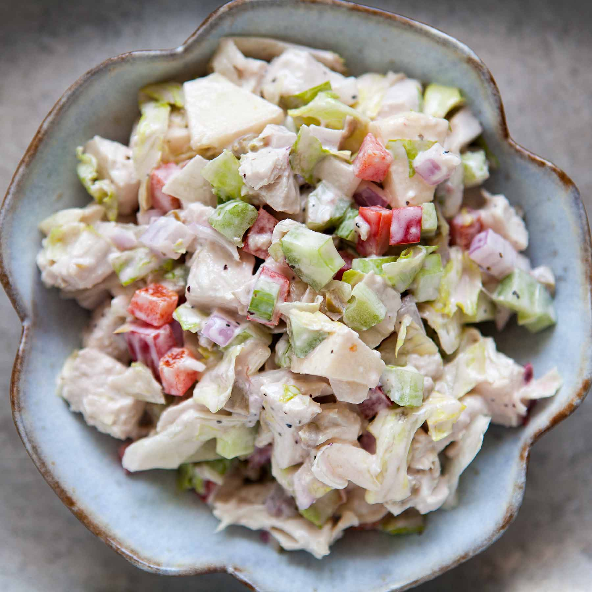

Savory Microwave Breakfast Mug
Time: 5 minutes
Cost: $11
Servings: 1

Ingredients
1 cup stale bread pieces"
1/4 cup pre-cooked chopped meat
1/4 cup finely chopped vegetables
2 Tbsp shredded cheese
1 Tbsp butter
3 Tbsp milk
1 large egg
Pinch of salt and pepper
Instructions
1. Tear or cut the bread into 1/2-inch pieces. Chop the meat and vegetables into small pieces. Shred the cheese.
2. Add the butter to the bottom of a large mug (10-12oz.) and microwave on high for 20 seconds or until it is fully melted. Whisk in the milk, egg, salt, and pepper with a fork.
3. Stir the meat, vegetables, and cheese into the milk and egg mixture first, then gently fold in the bread cubes until they are fully saturated.
4. Let the mug sit for one minute to fully absorb the liquid, then microwave on high for about 90 seconds, or until the center is solid and it has begun to pull away from the mug around the edges. Serve hot.
Source: